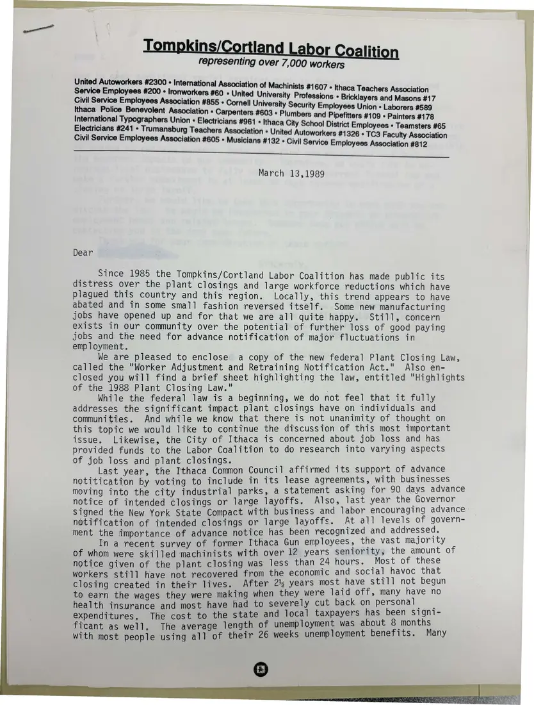
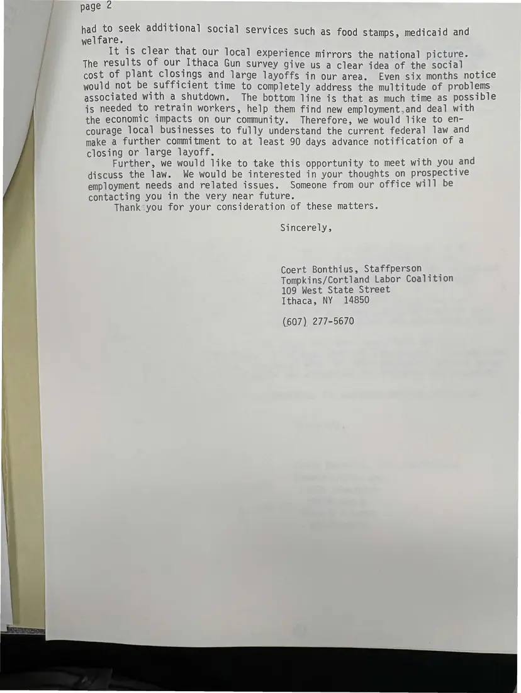

Letter, 2 pages
Letter to Ithaca-area businesses on the new federal plant closing law
March 13, 1989
Staffperson Coert Bonthius writes to local employers about the coalition's concern over plant closings, encloses a summary of the new federal law, and describes the city's support for advance notice. Page 2 asks to meet.
Download or cite this itemPages


(open zoom view)Read the page text (machine-read, mostly readable)
This text was generated automatically from the photograph and has not been corrected. The image is the authoritative record.
Sa ar a ee = EE kin land Labor liti representing over 7,000 workers United Autoworkers #2300 « International Assoc’ Service Employees #200 « Ironworkers #60 + United University Professions Ithaca Police Benevolent Association « Carpenters #603 + Plumbers and Pipefi i r ‘ va ipefitters #109 » Painters #178 International Typographers Union « Electricians #961 « Ithaca City School District Employees « Teamsters #65 Electricians #241 © Trumansburg Teachers Association » United Autoworkers #1326 » TC3 Faculty Association Civil Service Employees Association #605 » Musicians #132 + Civil Service Employees Association #812 March 13,1989 Dear Since 1985 the Tompkins/Cortland Labor Coalition has made public its distress over the plant closings and large workforce reductions which have plagued this country and this region. Locally, this trend appears to have abated and in some small fashion reversed itself. Some new manufacturing jobs have opened up and for that we are all quite happy. Still, concern exists in our community over the potential of further loss of good paying jobs and the need for advance notification of major fluctuations in employment. We are pleased to enclose a copy of the new federal Plant Closing Law, called the "Worker Adjustment and Retraining Notification Act." Also en- closed you will find a brief sheet highlighting the law, entitled “Highlights of the 1988 Plant Closing Law." While the federal law is a beginning, we do not feel that it fully addresses the significant impact plant closings have on individuals and communities. And while we know that there is not unanimity of thought on this topic we would like to continue the discussion of this most important issue. Likewise, the City of Ithaca is concerned about job loss and has provided funds to the Labor Coalition to do research into varying aspects of job loss and plant closings. Last year, the Ithaca Common Council affirmed its support of advance notitication by voting to include in its lease agreements, with businesses moving into the city industrial parks, a statement asking for 90 days advance notice of intended closings or large layoffs. Also, last year the Governor signed the New York State Compact with business and labor encouraging advance - notification of intended closings or large layoffs. At all levels of avert ment the importance of advance notice has been recognized and aateessets In a recent survey of former Ithaca Gun employees, the vast majority F of whom were skilled machinists with over 12 years seniority, the amount o notice given of the plant closing was less than 24 hours. Most of hess workers stil] have not recovered from the economic and social havoc one closing created in their lives. After 2% years most have still not begun to earn the wages they were making when they were laid off, many aye no health insurance and most have had to severely cut back on personal _ expenditures, The cost to the state and local taxpayers has been signi- ficant as well. The average length of unemployment was about peon ths with most people using all of their 26 weeks unemployment benefits. Many


(open zoom view)Read the page text (machine-read, mostly readable)
This text was generated automatically from the photograph and has not been corrected. The image is the authoritative record.
page 2 had to seek additional i ; peste: social services such as food stamps, medicaid and It is clear that our local experi i perience mirrors the national picture. The results of our Ithaca Gun survey give us a clear idea of any tay SOLS iy Seat iange layoffs in our area. Even six months notice ; ime to completely ad i beeen eater ihin enutdeun: 9) y address the multitude of problems ; The bottom line is that as much time as possible jis needed to retrain workers, help them find new employment.and deal with the economic impacts on our community. Therefore, we would like to en- courage local businesses to fully understand the current federal law and make a further commitment to at least 90 days advance notification of a closing or large layoff. Further, we would like to take this opportunity to meet with you and discuss the law. We would be interested in your thoughts on prospective employment needs and related issues. : Someone from our office will be contacting you in the very near future. Thank-you for your consideration of these matters. Sincerely, Coert Bonthius, Staffperson Tompkins/Cortland Labor Coalition 109 West State Street Ithaca, NY 14850 (607) 277-5670
See something wrong, or recognize a person or event? Send a correction. If you hold rights in this item or think it should not be public, write to the same address.